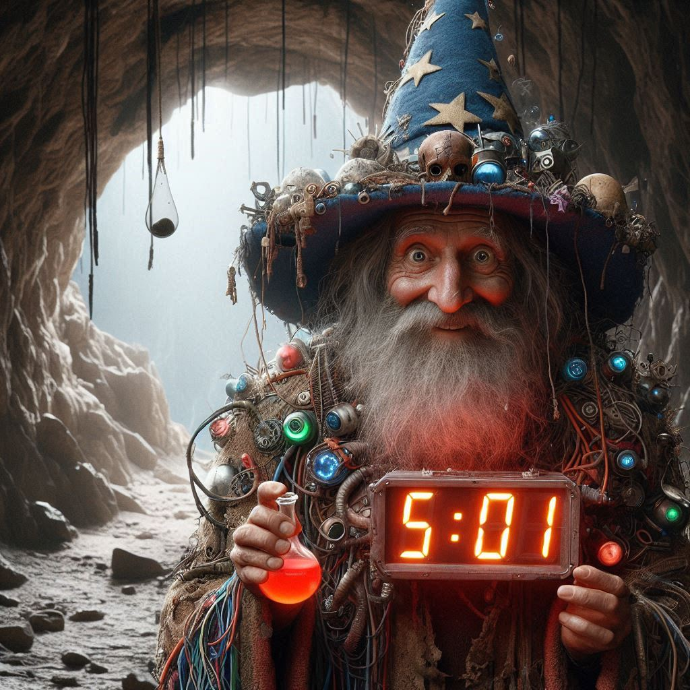

GrimmZandel The Forsaken, High Concoctionist of the Shadowmoor Expanse
About Me
Hello young strokers, it is I... GrimmZandel The Forsaken! Your trusted purveyor of potions, trinkets, bits, baubles, and hemmywinks. Some of you may know me because of my son, SnatchBang the Demolitionist. While he carries on his pursuits in linking the Flame of Asgon, I am but a simple merchant who offers strong supplements to aid you in battle.
My Blog
Click the frog below to enter my blog, Wenches and Witchcraft

Contact
If you'd like to get in touch, please feel free to meet me in the caverns below the valley.